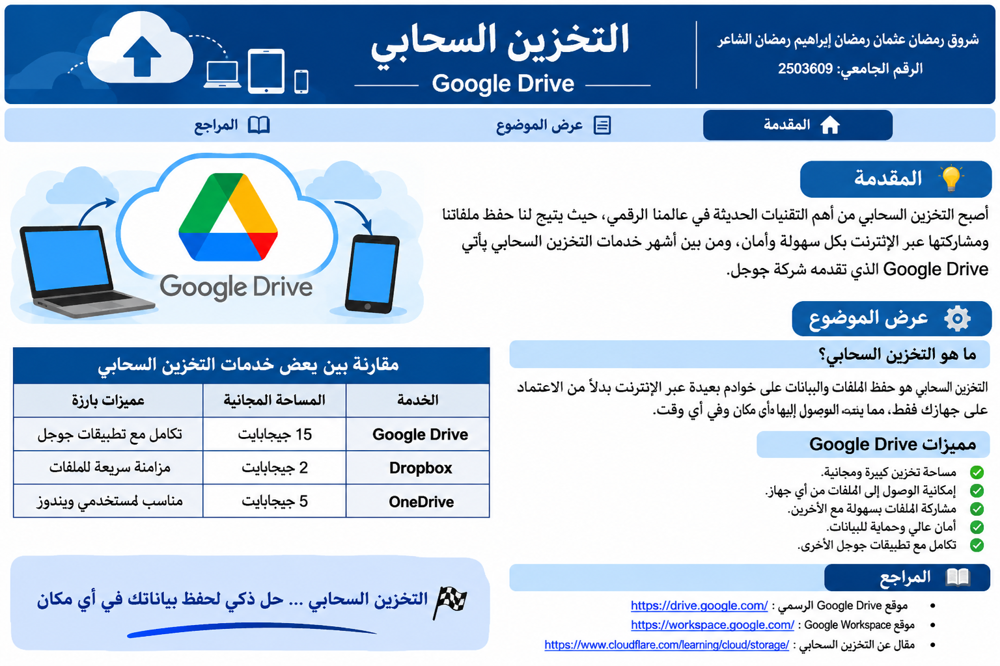

المقدمة
أصبح التخزين السحابي من التقنيات المهمة في حياتنا اليومية، لأنه يتيح حفظ الملفات والصور والمستندات عبر الإنترنت بدلاً من الاعتماد على جهاز واحد فقط. ويساعد ذلك على الوصول إلى الملفات من أماكن وأجهزة مختلفة، كما يسهل مشاركتها مع الآخرين. ومن أشهر خدمات التخزين السحابي خدمة Google Drive التي تقدمها شركة Google.

عرض الموضوع
ما هو التخزين السحابي؟
التخزين السحابي هو حفظ الملفات والبيانات على خوادم متصلة بالإنترنت، بحيث يستطيع المستخدم الوصول إليها عند الاتصال بالشبكة وتسجيل الدخول إلى حسابه. ومن أمثلته حفظ الصور والمستندات والملفات الدراسية على Google Drive بدلاً من الاحتفاظ بها على الهاتف أو الحاسوب فقط.
ما هي خدمة Google Drive؟
Google Drive خدمة تتيح للمستخدم تخزين الملفات وتنظيمها في مجلدات، ورفع المستندات والصور، ثم فتحها أو مشاركتها مع أشخاص آخرين. ويمكن استخدامها من الهاتف أو الحاسوب، كما تتكامل مع تطبيقات Google مثل مستندات Google وجداول بيانات Google.
أهم مميزات التخزين السحابي
- الوصول إلى الملفات من أجهزة مختلفة عند الاتصال بالإنترنت.
- سهولة مشاركة الملفات والمجلدات مع الآخرين.
- تنظيم الملفات داخل مجلدات لتسهيل العثور عليها.
- إمكانية التعاون على بعض الملفات مع زملاء الدراسة أو العمل.
- تقليل الاعتماد على مساحة التخزين الموجودة في جهاز واحد.
أمثلة على استخدام Google Drive
يمكن للطالب رفع الأبحاث والواجبات على Google Drive، والاحتفاظ بنسخة من الملفات الدراسية، ومشاركة رابط ملف مع زملائه أو المدرس. ومن المهم التأكد من إعدادات المشاركة، واختيار الأشخاص المسموح لهم بفتح الملف، واستخدام كلمة مرور قوية لحماية حساب Google.
جدول توضيحي لبعض خدمات التخزين السحابي
يوضح الجدول أمثلة لخدمات معروفة واستخداماً شائعاً لكل منها:
| الخدمة | الاستخدام الشائع | ميزة بارزة |
|---|---|---|
| Google Drive | حفظ الملفات ومشاركتها | التكامل مع تطبيقات Google |
| Microsoft OneDrive | حفظ الملفات والمستندات | التكامل مع Microsoft 365 |
| Dropbox | مزامنة الملفات ومشاركتها | مزامنة الملفات بين الأجهزة |
المراجع والمصادر
- مركز مساعدة Google Drive – إرشادات رفع الملفات وتنظيمها ومشاركتها.
- الموقع الرسمي لـ Google Drive – معلومات عن الخدمة وإمكاناتها.
- مركز مساعدة حساب Google – إرشادات حماية الحساب وإعدادات الأمان.
- مركز تعلّم Google Workspace – إرشادات استخدام أدوات Google والتعاون على الملفات.
- NIST (2011), The NIST Definition of Cloud Computing – مرجع لتعريف الحوسبة السحابية.